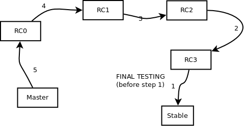

Our source code is stored on GitHub.
It is preferred to use SSH authentication on GitHub.
Go to https://github.com/settings/ssh and link your private key to your account.
(More information: generate ssh keys and general ssh troubleshooting.)
There are 3 "main" branches (= a total of 7 branches) that trigger server deployment:
We are using a service called dploy.io to push code automatically to our servers.
Credentials:
Username: bmgroup Email: thijs@bmgroup.be Password: --request from thijs--
Note: if you don't know how branches work, read the git manual first. You don't have to be a git master, but you HAVE TO understand how branching works.
Traditionally, the most recent version of the project is stored in the master branch. This branch is deployed to the Development Server automatically, so the master branch should always be kept in a working state.
Additionally, for big features, the use of feature branches is encouraged. These branches are not deployed to any server, but they are available to all developers for peer review. Once a feature is finished (and tested), it can be merged into the master branch.
The stable branch should, at any point, only contain code that is ready for release. All commits on this branch will be instantly pushed to the production environment. Please always ask permission from one of the senior developers before you do a push on the stable branch.
The staging branch always contains the code that needs to be tested. For Engine, there is one staging branch. For platform, there is a 4-week release cycle.
The engine / workers only have one staging environment. The api and workers MUST be designed so that it is always backwards compatible. Deprecated methods can only be removed once all parties involved (frontend, mobile & reseller) have confirmed the method is no longer used and after a logging period of at least 4 weeks confirms that the method is not in use anymore.
The release cycle for engine is not fixed. Updates will be released on concensus.
Read this chapter about basic git branching!
Hotfixes are always created in the branche they should fix.
When done, run the pullupstream.sh script (see below: pulling hotfixes) to pull your hotfix to all appropiate branches.
Your remote repository must be named origin. This is the default, so I don't foresee any trouble here.
Please note that these scripts only work if everything is in perfect state. In case we do something wrong, we will have to manually fix it and someone will have to read the git manual. Because I know you haven't.
On staging and production, the minified version of the javascript files are used. Practically this means that only code in the /build directory is pushed to the staging and production server.
To "compile" the code in the build folder, run node builder/build.js. This will make sure that the files in /build are up to date. After this, don't forget to commit all files that were created in the process.
When a bug is found in one of the staging versions, it must be fixed in that staging branch. Just switch your working copy to the version branch, edit your code and push. The code will be published to the correct staging device.
When you're done with debugging the version, make sure to push all commits onto all newer staging branches (so with a lower "staging id") AND the master branch. This way everyone is working on the must up to date data.
Sometimes it will happen that hotfixes are made to one of the release candidates, or even to stable.
In those cases it is important that these changes are pulled into all older repositories.
A newer RC and master should never be upstream from an older RC or stable. When you hotfix, always run below script to make sure your hotfix is available everywhere.
The cycle of the rc's looks as follows:

Note that you should first pull all hotfixes as described above.
There are various "staging" branches, labeled rc0, rc1, rc2 and rc3. These branches allow for a planned release cycle of 4 weeks.